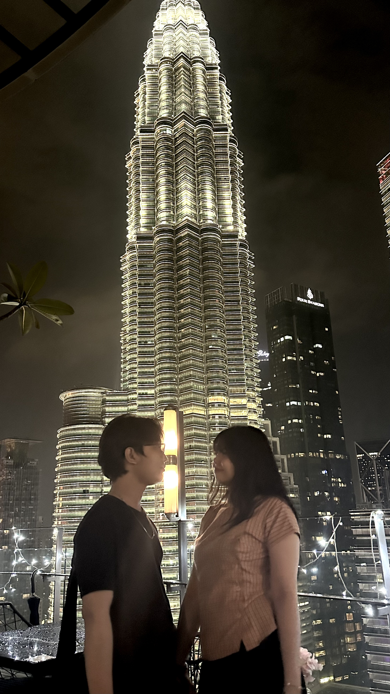
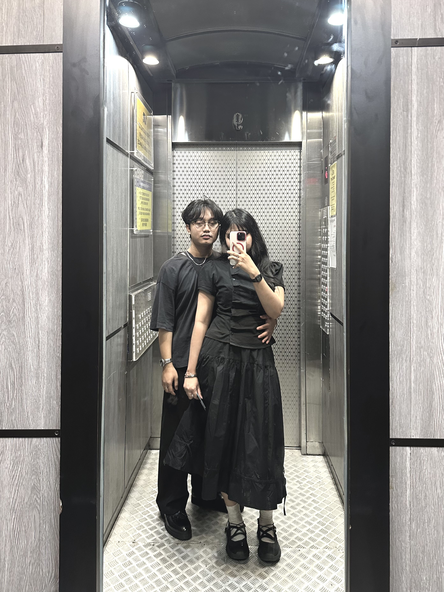
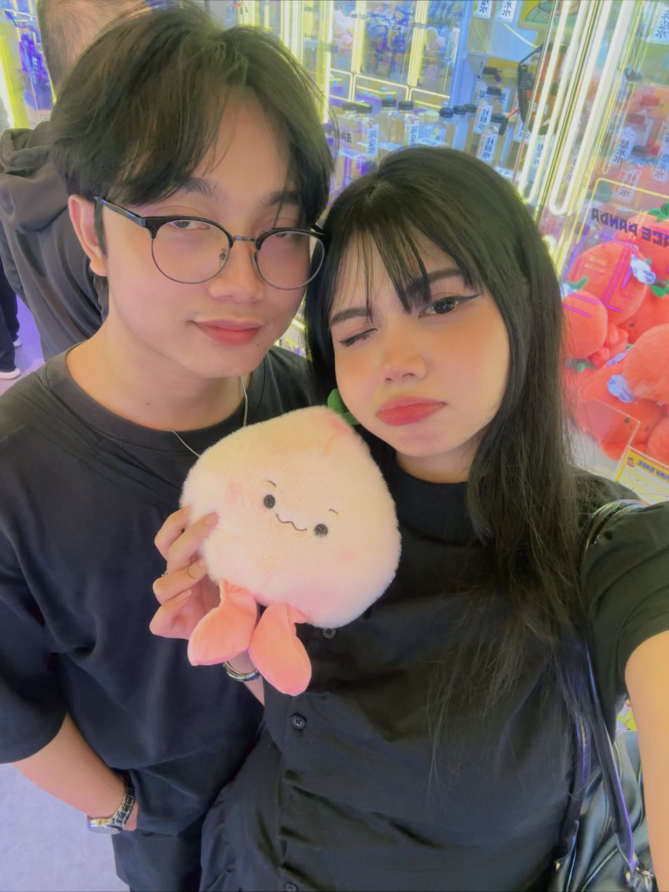
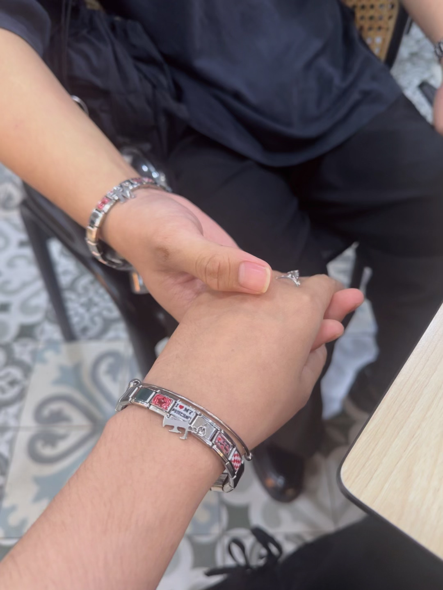
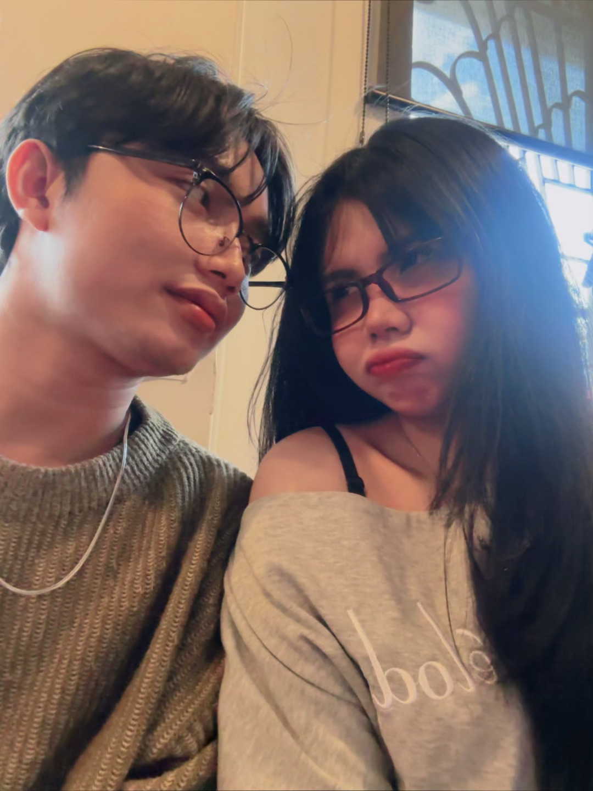

❤️ Hari ke-1







Untuk Kamu ❤️
Orang sering bertanya... Apa yang membuatku menyukaimu? Awalnya aku mencoba mencari jawabannya. Mungkin karena senyummu. Mungkin karena tawamu. Mungkin karena caramu membuat hariku lebih baik. Tapi semakin lama aku berpikir... Aku sadar aku tidak menyukai satu bagian darimu. Aku menyukai semuanya. Aku menyukai saat kamu bahagia. Aku menyukai saat kamu manja. Aku menyukai saat kamu bercanda. Aku menyukai saat kamu kesal. Aku menyukai semua versi dirimu. Karena bagiku... Manis tidak perlu menjadi sempurna untuk dicintai. Aku mencintaimu karena kamu adalah dirimu sendiri. ❤️
Fhadil ❤️ Manis
7 Bulan Bersama Terima kasih karena telah menjadi bagian terindah dalam hidupku. Dari semua kebetulan yang pernah terjadi... Bertemu denganmu adalah favoritku. Aku mencintaimu. Hari ini. Besok. Dan seterusnya.